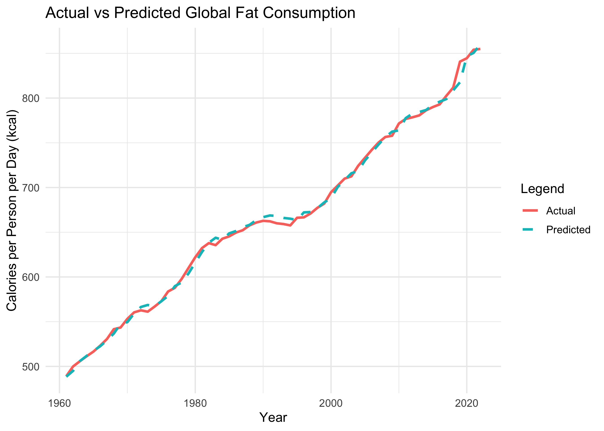

Code
# Load raw data from targets
raw_data <- tar_read(raw_data)# Load raw data from targets
raw_data <- tar_read(raw_data)This report focuses on the analysis of daily caloric supply derived from carbohydrates, protein, and fat across multiple countries from 1961 to the most recent available year 2022. The objective is to examine global dietary patterns over time, identify regional differences in macronutrient consumption, and explore trends in protein intake from animal-based and plant-based sources.
# Glimpse of data
glimpse(raw_data)Rows: 12,877
Columns: 7
$ Entity <chr> "Afgha…
$ Code <chr> "AFG",…
$ Year <int> 1961, …
$ Daily.calorie.supply.per.person.that.comes.from.animal.protein <dbl> 52.592…
$ Daily.calorie.supply.per.person.that.comes.from.vegetal.protein <dbl> 277.46…
$ Daily.calorie.supply.per.person.from.fat <dbl> 328.06…
$ Daily.calorie.supply.per.person.from.carbohydrates <dbl> 2256.2…Our World in Data is an online platform that provides accessible and comprehensive data on global development issues. The following dataset is used from the platform for analysis:
Daily caloric supply derived from carbohydrates, protein and fat: The dataset, provided by Our World in Data, is sourced from the Food and Agriculture Organization (FAO) of the United Nations. It documents the average daily caloric supply per person derived from three primary macronutrients, carbohydrates, protein, and fat, for numerous countries and regions globally. The data spans several decades, offering valuable insights into nutritional trends and shifts over time.
The dataset consists of the following columns:
Each row represents the average daily caloric intake for a specific country and year, broken down by macronutrient type.
While the dataset provides comprehensive coverage of global dietary patterns, there are some limitations to consider:
# Load renamed data
renamed_data <- tar_read(renamed_data)
# Display structure
glimpse(renamed_data)Rows: 12,877
Columns: 7
$ Country <chr> "Afghanistan", "Afghanistan", "Afghanistan", "Afghanis…
$ Code <chr> "AFG", "AFG", "AFG", "AFG", "AFG", "AFG", "AFG", "AFG"…
$ Year <int> 1961, 1962, 1963, 1964, 1965, 1966, 1967, 1968, 1969, …
$ Animal_Protein <dbl> 52.59264, 52.41573, 55.23608, 55.75903, 58.14664, 62.7…
$ Vegetal_Protein <dbl> 277.4622, 270.2443, 244.7503, 269.1064, 268.2374, 245.…
$ Fat <dbl> 328.0627, 329.0468, 337.5722, 341.0036, 347.9166, 349.…
$ Carbohydrates <dbl> 2256.246, 2183.914, 1986.155, 2206.713, 2201.896, 2005…#Load trimmed data
trimmed_data <- tar_read(trimmed_data)
#Convert empty strings to NA
converted_data <- tar_read(converted_data)
#Detect missing values
missing_values <- tar_read(missing_values)
# Display missing value count
missing_values Country Code Year Animal_Protein Vegetal_Protein
0 2661 0 0 0
Fat Carbohydrates
0 0 Code has missing values.Code has missing values. The missing values are primarily associated with Country column, which contains regions or combined areas (e.g., “Africa,” “Asia”) that do not have ISO country codes.# Load cleaned data after removing regions
cleaned_data <- tar_read(data_cleaned)
#Display missing values after cleaning
post_clean <- tar_read(missing_post_clean)
post_clean Country Code Year Animal_Protein Vegetal_Protein
0 0 0 0 0
Fat Carbohydrates
0 0 #Duplicate check
duplicate_count <- tar_read(duplicate_check)
duplicate_count[1] 0# Load the summarized data by year
summary_data <- tar_read(summary_data)
#Plot global trends in macronutrient consumption
plot_1 <- tar_read(plot_trends)
plot_1
This plot shows the absolute values of daily kilocalorie intake per person for each macronutrient (Animal Protein, Vegetal Protein, Fat, and Carbohydrates) from 1960 to 2020. Helps understand the growth in consumption volume over the years, highlighting the rise in fat intake and the relatively stable intake of proteins.
Carbohydrates: Carbohydrates have consistently been the largest source of daily energy, providing over 1500 kcal per person per day. While relatively stable, there has been a slow but steady increase over time, suggesting that staples like rice, wheat, and maize continue to be dietary mainstays across the world.
Fat Consumption: Fat intake has shown a steady climb since 1961, with sharper increases noticeable after the 1980s. This growth likely reflects shifts towards more processed foods and calorie-dense diets as countries urbanize and food systems globalize. The steady rise in fat consumption suggests changing eating habits that prioritize richer, high-energy foods.
Protein Intake: Both animal-based and plant-based proteins have seen modest growth, remaining under 500 kcal per person per day. Animal protein consumption has increased gradually, especially in wealthier nations with rising meat consumption. Vegetal protein remains steady, reflecting its role in more plant-based diets, especially in Asia and Africa.
#Compute Top 3 for Animal Protein
top3_animal_protein <- tar_read(top3_animal_protein)
#Plot top 3 countries for Animal Protein by decade
plot_top3_animal_protein <- tar_read(plot_top3_animal_protein)
plot_top3_animal_protein
From the Analysis of Animal Protein Consumption by Decade the key observations are as follows:
Iceland’s Consistent Top Position Iceland consistently ranks as the highest consumer of animal protein per person across all observed decades. The average daily intake in Iceland was 358.1 kcal in 1960 and steadily increased to 426.1 kcal by 2010, with a slight decrease to 421 kcal in 2020. This trend indicates strong dietary reliance on animal-based food sources that has remained stable over time.
Shifts in Leading Countries Over Time While Iceland’s position remained constant, the second and third spots varied: In the 1960s and 1970s, Australia and New Zealand were prominent, reflecting their strong livestock industries. During the 1980s and 1990s, France emerged as a leading consumer alongside Hong Kong, which continued to rank highly in subsequent decades. By 2020, Mongolia entered the top three for the first time, suggesting increased animal protein consumption in the region.
Changes in Consumption Levels The plot indicates an overall increase in animal protein consumption among the top-ranking countries over the six-decade span. Iceland’s average intake grew by approximately 68 kcal per person per day from 1960 to 2020, highlighting a steady upward trend. Notably, Hong Kong saw substantial growth, particularly evident from 2010 onwards, indicating rising consumption levels.
The stacked area chart illustrates the shifting proportions of global caloric intake from 1961 to 2022. It visualizes how different macronutrients—Animal Protein, Vegetal Protein, Fat, and Carbohydrates, contribute to the global dietary structure over time.
#Aggregating by macronutrient
sum_data <- tar_read(sum_data)
#Calculating proportions
calorie_prop <- tar_read(calorie_prop)
#Converting to wide format
long_prop <- tar_read(long_prop)
#Plot proportions of macronutrients
plot_proportions <- tar_read(plot_proportions)
plot_proportions
Carbohydrates Remain Dominant: Carbohydrates consistently account for the largest proportion of global caloric intake. Despite some fluctuations, their share has remained relatively stable over six decades, indicating a strong global reliance on carbohydrate-rich staples like grains and starchy vegetables.
Gradual Rise in Fat Consumption: The proportion of calories derived from fat has shown a noticeable increase, particularly since the 1980s. This growth reflects dietary shifts towards higher-fat food items, potentially driven by increased consumption of processed foods and oils. The rise is gradual but steady, signaling a global trend towards richer, calorie-dense diets.
Stable Share of Animal and Vegetal Protein: The relative contribution of Animal Protein and Vegetal Protein to the total caloric intake has remained largely unchanged. While absolute consumption has grown, their proportional share of the total global caloric intake has not shifted significantly. This indicates that while populations are consuming more food overall, the balance between protein sources remains steady.
Conclusion: The stacked area chart effectively captures long-term global dietary patterns. Carbohydrates continue to be the primary source of global energy intake. Fat consumption, while still secondary, is the only macronutrient with a visibly increasing share. Meanwhile, Animal and Vegetal Protein maintain consistent proportions, reflecting stable dietary roles over the decades.
The time series for global fat consumption was created using the annual global average fat consumption data from 1961 to 2022. The summary statistics of the time series are as follows:
# Preparing the data for time series modeling
fat_ts <- tar_read(fat_ts)
#Summary time series data
summary_fat_ts <- tar_read(summary_fat_ts)
summary_fat_ts Min. 1st Qu. Median Mean 3rd Qu. Max.
489.0 584.8 660.5 665.9 748.2 854.9 These figures reflect a significant rise in global fat consumption per person over time, with notable accelerations in the 1990s and 2010s. The observed upward trend indicates a gradual increase in dietary fat intake worldwide.
#Time series plot
plot_fat_ts <- tar_read(plot_fat_ts)
plot_fat_ts
# ARIMA model
fat_arima <- tar_read(fat_arima)
#Model Summary
fat_arima_summary <- tar_read(fat_arima_summary)
fat_arima_summarySeries: fat_ts
ARIMA(0,1,0) with drift
Coefficients:
drift
5.9994
s.e. 0.6371
sigma^2 = 25.17: log likelihood = -184.43
AIC=372.87 AICc=373.08 BIC=377.09
Training set error measures:
ME RMSE MAE MPE MAPE MASE
Training set 0.007790046 4.935827 3.600444 -0.005469347 0.5343166 0.5723284
ACF1
Training set 0.1625095The ARIMA model selected by auto.arima() for global average fat consumption data is an ARIMA(0,1,0) with drift, indicating that the model captures the trend as a random walk with drift.
Model Coefficient
Model Diagnostics
Error Metrics
# ARIMA Forecasting
fat_forecast <- tar_read(fat_forecast)
# Plot the forecast
plot_fat_forecast <- tar_read(plot_fat_forecast)
plot_fat_forecast
The ARIMA model forecasts that global average fat consumption will continue to increase at an approximate rate of 6 kcal per person per day over the next decade (2023–2032).
# Load global trends with predictions
global_trends_predicted <- tar_read(global_trends_predicted)
# Plot Actual vs Predicted
plot_actual_vs_predicted <- tar_read(plot_actual_vs_predicted)
plot_actual_vs_predicted
# Residuals
residual_diagnostics_test <- tar_read(residual_diagnostics_test)
residual_diagnostics_test
Ljung-Box test
data: Residuals from ARIMA(0,1,0) with drift
Q* = 9.3382, df = 10, p-value = 0.5003# Residual plot
knitr::include_graphics(tar_read(residual_diagnostics_plot))
The ARIMA(0,1,0) with drift model was evaluated using residual diagnostics: - Ljung-Box Test: A p-value of 0.5003 indicates no significant autocorrelation, suggesting the model captured the time-dependent structure well. - Residual Plot: Residuals fluctuate around zero with occasional spikes but remain mostly stable. - ACF Plot: Minimal autocorrelation is observed, with most lags within confidence intervals. - Density Plot: Residuals are approximately normally distributed with slight skew.
Overall, the diagnostics confirm the model’s reliability for forecasting global fat consumption.
The ARIMA(0,1,0) with drift model effectively captures the upward trend in global fat consumption observed in the Global Trends in Macronutrient Consumption (1961 - 2022) plot. The model’s estimated drift of 5.99 kcal per person per year aligns with the steady increase shown in the EDA visualization, demonstrating its reliability in modeling long-term growth.
The Proportion of Global Caloric Intake by Macronutrient plot highlights fat’s rising share over time, which the ARIMA model projects into future periods. While carbohydrates remain dominant and protein sources stable, fat’s contribution has grown steadily. The Actual vs. Predicted plot shows strong alignment, with low error metrics (RMSE: 4.94, MAE: 3.60, MAPE: 0.53%), affirming predictive accuracy.
Residual diagnostics confirm well-behaved residuals with no significant autocorrelation, validating the model’s capacity to capture fat consumption trends effectively.
Overall, the ARIMA model not only matches historical EDA trends but also projects them confidently into the future, demonstrating accuracy and consistency in reflecting global dietary shifts.
The analysis of global macronutrient consumption from 1961 to 2022 reveals clear trends: carbohydrates remain the largest source of calories, while fat consumption has steadily increased. The ARIMA(0,1,0) model effectively captured this upward trend, forecasting continued growth in fat intake over the next decade. Iceland consistently emerged as the top consumer of animal protein across decades, reflecting stable dietary patterns. Overall, the data indicates persistent global dietary habits, with rising fat consumption pointing to broader nutritional shifts and changing food preferences worldwide.